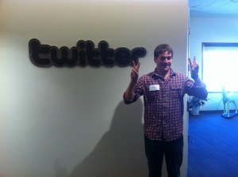

Day 2, Silicon Valley IXP
silicon-valley-ixpyear-twoJames Slavet/Adam Nash (Greylock), "State of the Space" on Consumer Internet
What's an Entrepreneur-in-Residence?\
Someone working on their 'next big thing' at a VC firm. Uses VC office space, gets exposure to VC dealflow.
Usually no formal expectation that the VC firm will invest.
Usually unpaid.
What's an Executive-in-Residence?\
Someone looking for their next CEO role; usually takes 6-10 months to find.
Gets exposure to VC dealflow.
Usually is paid.
Greylock only invests in software; segments investments into consumer and enterprise.
Basic investment theses: social graph, mobile, Big Data
"The iPhone broke open enterprise IT departments." -- Adam Nash
Three basic models to monetize consumer:
Advertising > Out of vogue; need either 100M users or 30M users who are super-desirable or somehow specialized in their needs.
Subscription > Lends itself to analytics; usually very high-margin.
Transactions/commerce > Traditionally hard, but wave of interesting new startups. Key changes: more like subscription in terms of customer stickiness; maybe not holding inventory.
The depressing math about outcomes:
-- There are two new companies a year worth > $1B
-- There are 15-20 new companies a year worth > $100-200M
Internally, most big VCs invest to make a $50M cash return. Think about financing through that lens, because it's how VC investors are thinking about it...
PunchTab Case
Major, enduring takeaway: Silicon Valley thrives on reputation, track record, and signaling.
Nick Sturiale: don't bootstrap; liquidity takes forever (8-10 years for a successful exit).
Seed-round term sheets are always negotiable. You'll need an A Round from somewhere...
Lessons learned from Mike Cassidy
Speed wins. Fast product rollouts make it hard for competitors to keep up, build morale, and give you good PR.
On biz dev: Deals close fast or not at all. "The probability of a deal closing declines by 10% each day that the deal doesn't close."
Viral coefficient = X x Y x Z
where X = % of users exposed to trial
Y = % of users who invite friends
Z = Average # of friends invited
If viral coefficient > 1, you can do short-hand math to see that user acquisition happens incredibly fast.
Example: 1.02 => rule of 72 implies that number of users doubles every 36 days.
On pitching a product without actually having a product:
-- Get "If...than" commitments from customers (If you built this product, I would buy X units).
-- Figure out how you'd build it (team, Gantt chart for development timeline, etc.).
Huge takeaway: there are some people (Mike Cassidy) who think about the world in a very different way from me. And sometimes they build $500M companies in under 500 days. And I am impressed.
Twitter company visit (Satya Patel, VP of Product)

Twitter's competition (broadly): anyone consuming users' time
Twitter is a "many-to-many" medium
{kind=link}
Truths:
-- It is very hard to change consumer behavior.
-- Successful Internet businesses address one single use case very well.
Model for thinking about Twitter users:
Activation => Consumption => Engagement => Creation
(I have previously heard this as segmenting user base into consumers, curators, and creators)
Twitter has seven core values (didn't actually go through all of them):
-- Ship it.
-- Simplify.
-- Passion and personality matter.
Thinking about the PM role: product management is an editorial function. PMs are primarily curators.
Engineering lead on a Twitter team runs daily scrums.
Cloudflare company visit (Michelle Zatlyn, Matthew Prince)
Think about building awareness when you announce new products. Cloudflare launched at TechCrunch disrupt; benefitted from winning HBS business plan competition.
Announcing a financing round is free publicity. You should do it when you need publicity, NOT as soon as you close the round. Inevitable TechCrunch write-up helps hiring, don't announce financing just to stoke your egos.
To think about: in an early-stage venture, what you are worth is in part a function of how much money you raise.
Think about how your financers view the world: Monday morning VC partners meeting; weekly "news cycle" within venture firms, outside investors need to justify everything to their partners/colleagues. Make their lives easier.
A macro thesis about the world: Internet publishers still cannot monetize their content effectively. This must change.
thredUP company visit (James Reinhart, Chris Homer)
Started as "Netflix for shirts!"
One basic demo tool: print out wireframes, sit down with a user and let them "click through."
Tools for customer feedback:
-- Moms on staff!
-- Vibrant Facebook community => Easy to ask questions about product decisions. But are the answers always right? Users don't like change...
"Good products don't distribute themselves."
Secular tendency for startups to ignore the importance of go-to-market and focus exclusively on how to build the "right" product.
Some business models require a lot of press to acquire customers, and it's hard to get good customer observation without enough early adopters. Chase reporters if necessary; get familiar with bloggers and news sources that your customers use.
- Next: Day 3, Silicon Valley IXP
- Previous: Day 1, Silicon Valley IXP